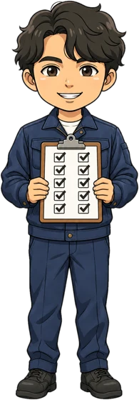
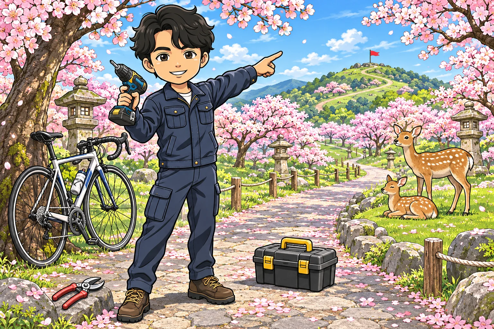
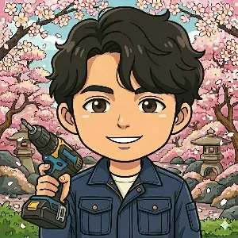
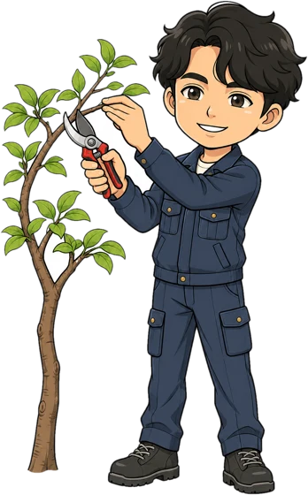
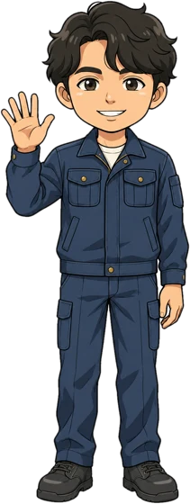
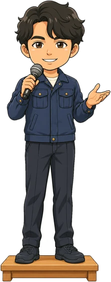
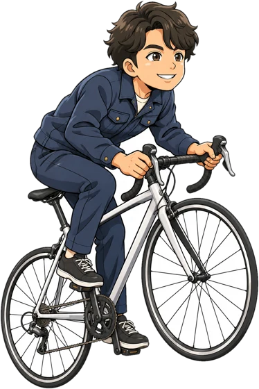
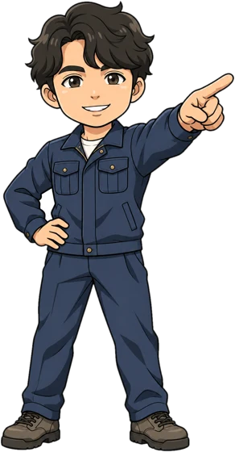

1
達成欲
今日も何かを終わらせたい- 毎日「やり終えた」が積み上がると、エネルギーが湧く
- 数をこなすこと、続けることが苦にならない
→ 副業の利益が本業を超えるまで、手を止めなかった人


上位10のうち8つが「実行力」と「影響力」。目標を決めて、段取りを組んで、最後までやり切る。そのうえで、前に立って人を連れていける。そんな資質の並びです。
プロフィールに貼ってくださった結果と、公開のプロフィールの言葉から立てた「見立て」です。当てはまる所・違う所は、ご自身の経験と照らしてみてくださいね。
上位10の資質
ちなみに、プロフィールの16Personalitiesは「指揮官（ENTJ）」。目標に向かって段取りし、人を率いるタイプという点で、ストレングスの並びと同じ方向を向いています。
TOP5の読み解き

→ 副業の利益が本業を超えるまで、手を止めなかった人

→ 天気も庭の形も毎回ちがう便利屋の現場で、光りやすい才能

→ 口コミとリピーターに支えられる仕事の、土台になっている資質

→ フェスのミニステージから「次はメインステージ」へ

→ 好きな言葉「やらない後悔よりやる後悔」そのもの
組み合わせから見える才能
ゴールを決めて、毎日積み上げて、引き受けたことは最後まで。長い目標ほど力を発揮しやすい組み合わせです。
2030年までに公務員を卒業する、という目標の立て方そのものに表れています。
計画どおりにいかない日でも、その場で組み替えて前に進める。予定外を「困った」より「じゃあこうしよう」で受け止められます。
はっきり言葉にして、先頭で動き出せる。迷っている人の背中を押す役が似合います。
「公務員だから副業は無理」と諦めている人の背中を押したい、とチャットの管理人をされているのも、この組み合わせらしさ。
初対面の人とすぐ打ち解けて、相手から新しいことを吸収できる。オフ会やイベントが、学びの場にも営業の場にもなります。
ちょっと面白いところ
原点思考は「過去の成り立ちや歴史に関心がある」資質。やっすーさんは一番下です。それでもプロフィールには「やってみて、振り返って、直して、またやる」とあります。やっすーさんの振り返りは、昔をなつかしむためのものではありません。次をもっと良くして、ゴールに近づくための振り返りなんだと思います。達成欲と学習欲が、振り返りを前向きな道具に変えています。

動く条件・止まる条件
営業で活かすなら
「いつ・何を・どこまで」を先に示す。アレンジと責任感が、そのまま頼む人の安心になります。
社交性で初対面の壁を下げて、その場で「この人なら」と思ってもらう。
「公務員×便利屋で、本業の手取りを超えた」は強い看板。自我を、選ばれる理由に。
ひとつだけ気をつけどころ。指令性と活発性が強い時は、相手より先に決めてしまいがち。提案の前に「どこで迷っています？」と一言聞くと、押しの強さが頼もしさに変わります。
関わる時のフレーズ
| ◯ 届きやすい | ✕ 届きにくい |
|---|---|
| 「ゴールはここ、段取りはお任せします」 | 「とりあえず様子を見ましょう」 |
| 「この前の仕事、ここまでやり切ったのすごい！」 | 「細かいところは全部こちらで決めます」 |
| 「やっすーさんに前に立ってほしい」 | 「急がなくていいので、いつか」 |
おわりに
6位から下の顔（学習欲・社交性・目標志向・適応性・指令性…）も合わせて読むと、もっと「あ、これ自分だ」が見つかるはず。今日の営業相談会のように、人と話しながら自分の経験と照らすのがいちばんの使い方です。ストレングスファインダーを受けてくださって、結果を見せてくださって、ありがとうございました！